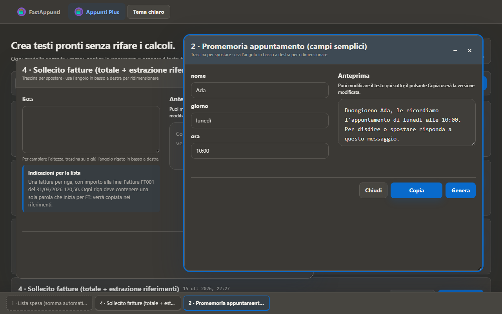
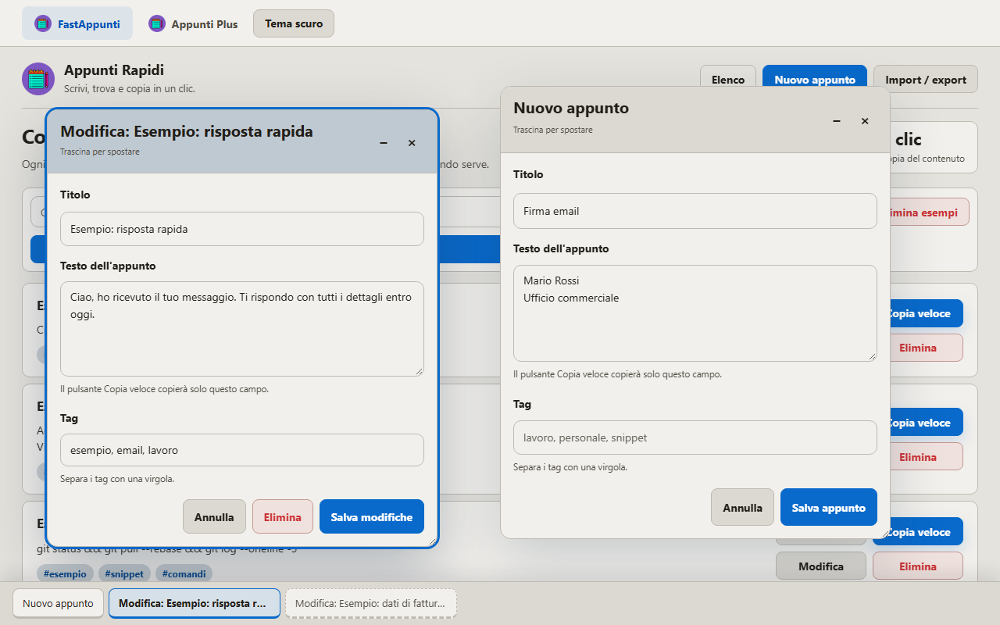
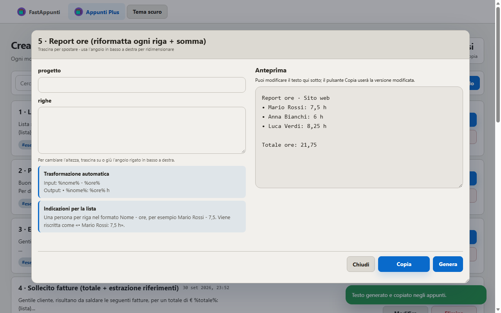

Appunti e modelli di testo,
copiati in un clic.
FastAppunti è un gestore di appunti gratuito e open source per chi scrive sempre le stesse cose: risposte ai clienti, firme email, dati di fatturazione, IBAN, comandi, promemoria. Funziona nel browser, offline, senza account e senza server: i tuoi dati restano sul tuo computer.

Copia veloce
Salva i testi che riusi e copiali negli appunti con un solo clic, senza aprirli.
Modelli compilabili
Testi con campi da riempire: l'app calcola somme e totali e prepara il testo finale.
Più finestre insieme
Compila più modelli contemporaneamente, riduci le finestre a icona nella barra in basso.
Privato e offline
Nessun server, nessuna richiesta di rete: i dati sono salvati nel browser (IndexedDB).
Backup in JSON
Esporta e importa appunti e modelli per spostarli su un altro computer.
Leggero e gratuito
Circa 230 KB, zero dipendenze, licenza MIT. Tema chiaro e scuro.
Due app, una cartella


Come si usa
- Apri Appunti Rapidi o Appunti Plus qui online, oppure scarica lo ZIP e apri
appunti.html. - Crea un appunto o un modello: trovi già alcuni esempi pronti.
- Premi Copia veloce o Compila → Genera: il testo è già negli appunti.
I dati salvati nella versione online restano nel browser che usi; quelli della versione scaricata sono separati. Per spostarli usa Import / export.